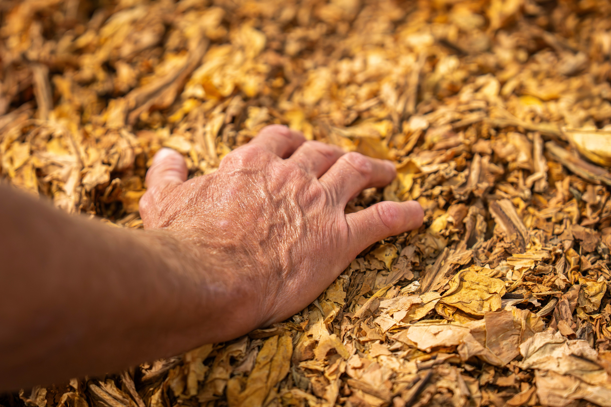
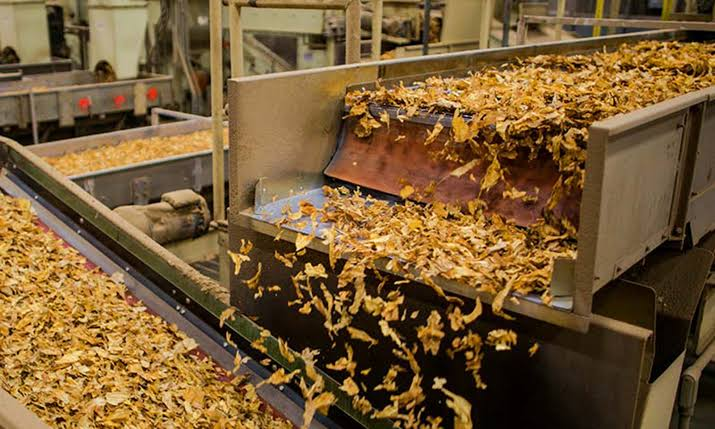
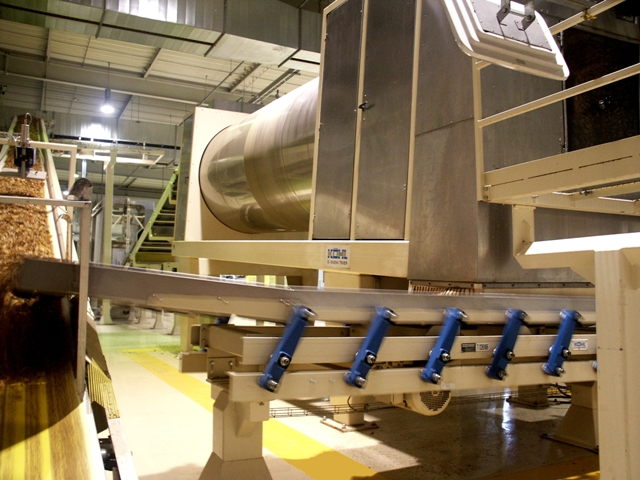
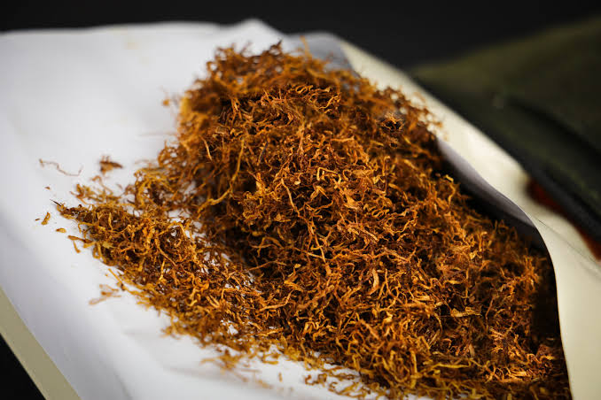
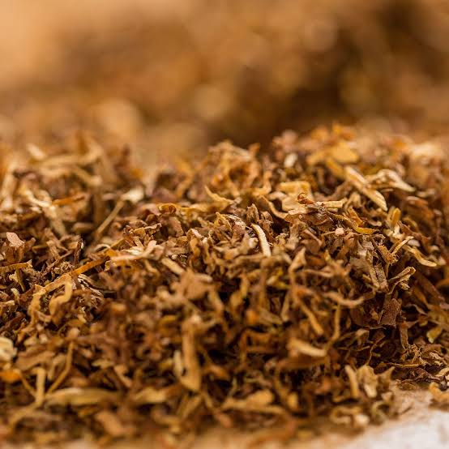
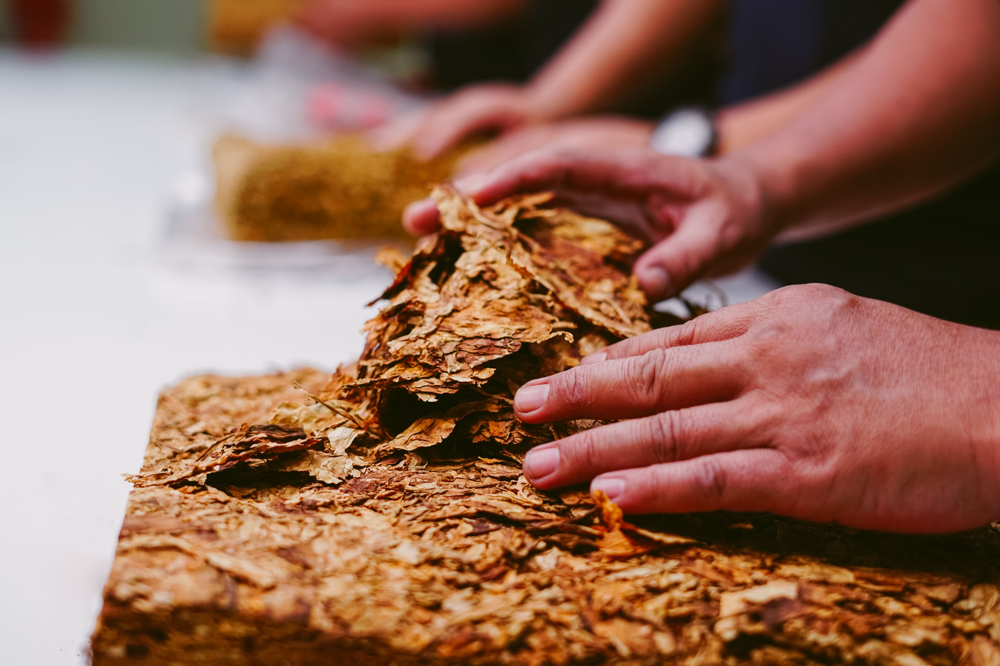
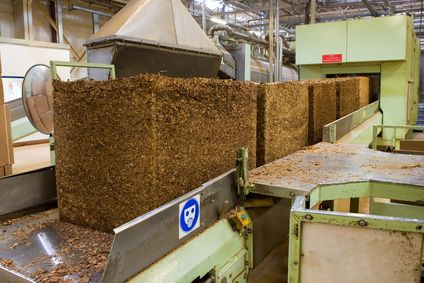

Processing Capabilities
From raw tobacco leaf to finished cut-rag — every stage engineered for consistency and precision.
Our Approach
Specification-First Processing
Every processing run at Prime Leaf Processing begins with the customer's specification. Before a single kilogram of tobacco enters our facility, we have agreed the key parameters: tobacco type, grade, cut width, moisture, blend composition, and packaging.
This specification-first approach ensures that our processing operations are always aligned with what the customer needs — not what is easiest to produce.
Our facility at BEPZA EZ, Chattogram is equipped for the full tobacco processing cycle — from initial leaf preparation through to finished cut-rag packaging and dispatch.
36 000 Tonnes
Annually
+35%
CRES Filling Power Boost
±0.5%
Moisture Precision
2 Lines
Cut Rag & CRES
Primary Core Manufacturing
Line A: High-Precision Cut-Rag Processing Line
Our primary manufacturing line is purpose-built for high-speed, specification-driven Cut-Rag tobacco production. Operating with advanced computerized process controls, continuous casing infusion, and high-precision rotary cutting.
Direct Conditioning Cylinder (DCC)
Threshed leaf lamina is conditioned with superheated steam and micro-atomized water spray to achieve optimal cutting moisture (18%–20%) without leaf degradation.
Automated Casing Kitchen & Drum
Precision metering pumps spray proprietary sugar casings, cocoa, licorice, and humectants onto lamina in a dual-action rotating cylinder for uniform absorption.
Multi-Knife Rotary Cutterheads
Continuous high-speed rotary knife drums slice tobacco into precise widths ranging from ultra-fine 0.35mm shag (RYO) to 0.85mm American blend ribbons with automatic knife honing.
Rotary Drum Expansion Drying
Steam-heated internal flight dryers gently reduce moisture down to target specification (12.5%–13.5%) while puffing the strands to maximize filling power.
Top Dressing & Cooling Cylinder
Specialized cooling drum equipped with fine-mist spray nozzles for applying volatile top aromas, menthol crystals, or signature flavors under closed-circuit atmosphere.
Silo Bulking & C-48 Packing
Horizontal layered bulking silos allow thorough resting and moisture equilibration before hydraulic compression into 200 kg C-48 cartons with sealed poly liners.
Dedicated CRES Steam & Expansion Line
Our complementary second line unlocks the hidden volume of tobacco leaf stems. Operating with pressurized steaming (28%–32%), dual heavy rolling (≤0.20mm), micro-cutting, and flash air expansion (250°C–300°C), this line produces high-yield filamentary stem fibers with +35% to +40% filling capacity that blend seamlessly into our Cut-Rag products.
Every 1% CRES added saves ~0.5% costly lamina while significantly lowering smoke tar (35mg → 15mg).
Processing Stages
The Full Processing Cycle
Select any stage to learn more about our approach and quality controls.

Stage 01
Leaf Selection
Selection and preparation of tobacco leaf according to required specifications. All incoming leaf is assessed against agreed grade, type and quality parameters before entering the processing cycle. Only material that meets the agreed specification proceeds to the next stage.

Stage 02
Threshing & Separation
Controlled mechanical threshing and separation of tobacco material. The goal is to separate the leaf lamina from the stem while maintaining leaf integrity. Foreign material and non-tobacco material control is applied at this stage.

Stage 03
Conditioning
Controlled moisture and physical conditioning of tobacco before cutting and further processing. Conditioning ensures the leaf is in optimum physical condition for subsequent operations, with moisture levels brought within the range required for effective processing.

Stage 04
Precision Cutting
Precision cutting to agreed cut-width specifications. Cut-width and cut-length are set according to the customer's specification and are verified at regular intervals throughout the production run to maintain consistency.

Stage 05
Drying & Conditioning
Controlled drying and conditioning to achieve the required final moisture content and physical characteristics. Final moisture is verified against the agreed specification before the product proceeds to packaging.

Stage 06
Blending
Blending of tobacco types and grades according to customer-defined formulations. Blend consistency is maintained across production batches to ensure repeatable, reliable supply for customers with ongoing requirements.

Stage 07
Quality Control
Quality is not only checked at the end — it is controlled at every stage of the processing cycle. Our multi-stage quality verification system covers incoming leaf, in-process checks, and final product verification against agreed customer specifications.

Stage 08
Packaging & Dispatch
Finished product is packaged in bulk, cartons or cases according to customer specification. Packaging is inspected before dispatch. Export documentation is prepared according to destination requirements.